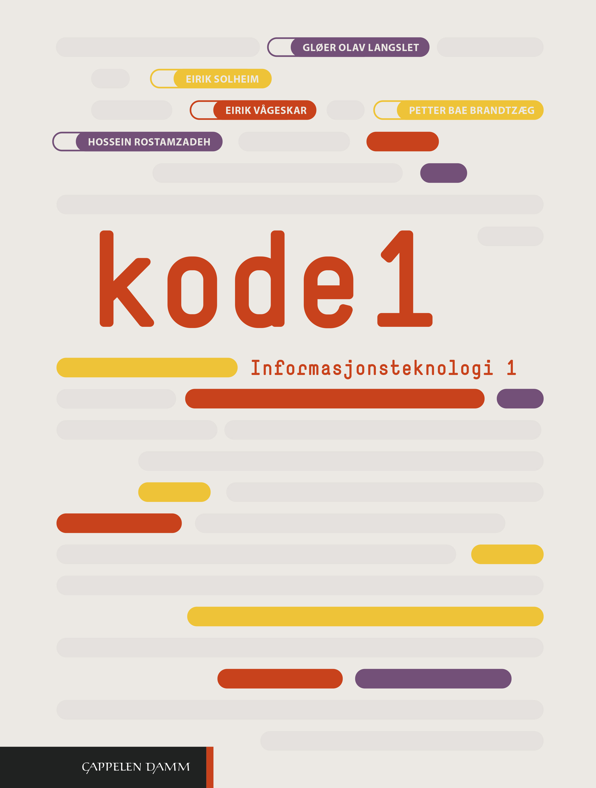

Denne nettsiden gir en oversikt over sentrale temaer i IT1-faget. Her finner du korte og presise forklaringer på viktige begreper. Målet er å presentere stoffet på en enkel og forståelig måte slik at du kan bruke det som støtte i læringen og forberedelse til prøver.
